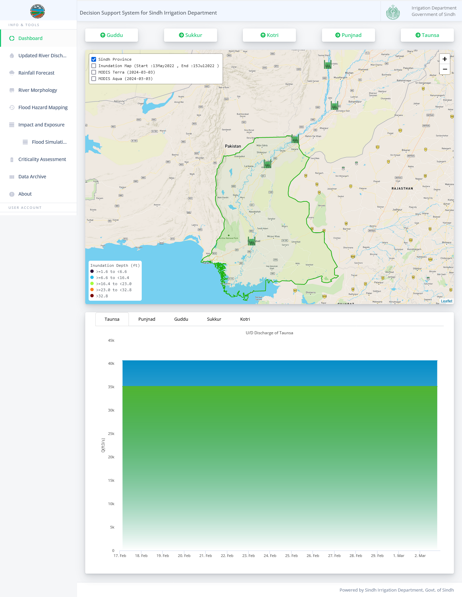
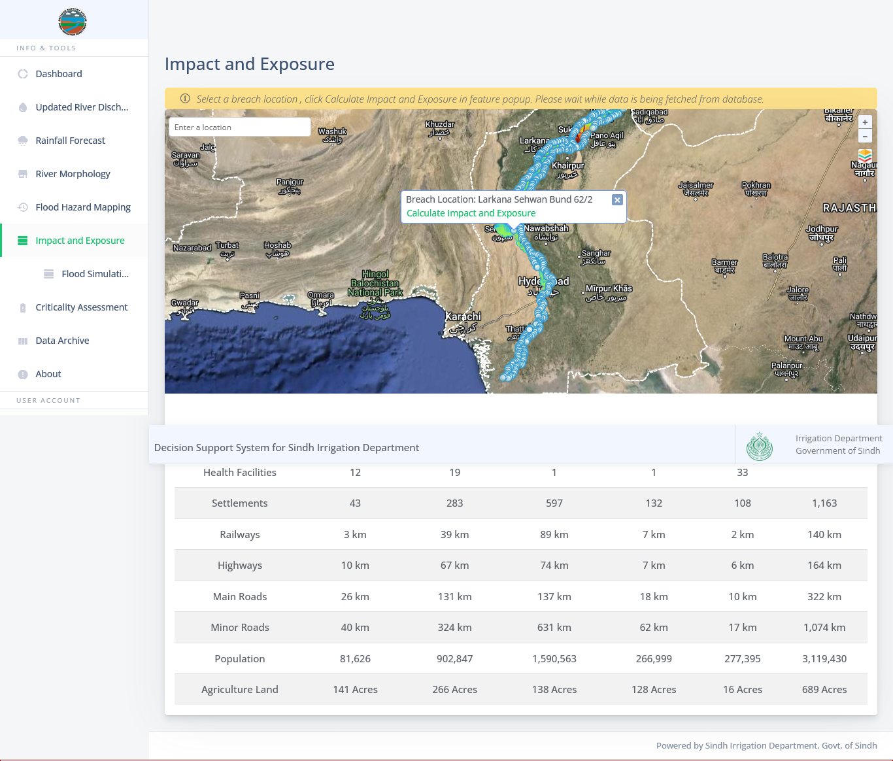
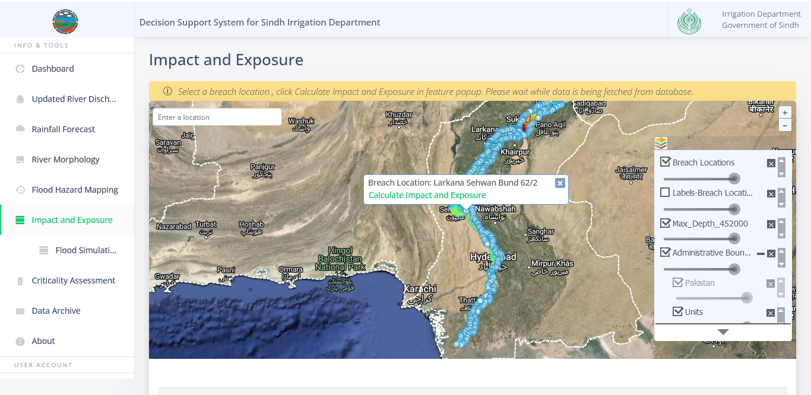

<div class="container">
  <div class="row topspace">
    <article class="col-sm-8 maincontent">
      <div class="your-class">
        <div></div>
        <div></div>
        <div></div>
        <div></div>
        <div></div>
        <div></div>
        <div></div>
        <div></div>
        <div></div>
        <div></div>
        <div></div>
        <div></div>
        <div></div>
        <div></div>
        <div></div>
      </div>
      <br />
      <p>
        Working as Web Developer and GIS expert professional at Levant
        Consulting, Lahore in “Expansion and Integration of Database Development
        for Flood Simulations in Decision Support System in Sindh Flood
        Emergency Rehabilitation Project (SFERP)” funded by the World Bank’s
        Sindh Flood Emergency Rehabilitation Project (SFERP).
      </p>
      <br />
      <p>
        Technical expert responsible for handling of development operations
        including: leading the development side of the project, infrastructure
        management, continuous integration & continuous development, controlling
        and implementing automation using code snippets, overall security of the
        project its associated datasets and hardware/software, documentation
        etc.
      </p>
      <br />
      <p>
        Responsible for infrastructure management, design, write, deploy and
        maintain code, optimize cost while enhancing performance and security.
        Perform deployment using containerization technologies, such as Docker,
        to enable the team to build and manage containerized applications
        effectively. Conduct regular security assessments and implement robust
        access control mechanisms, ensure overall security compliant with
        standards.
      </p>
    </article>
    <aside class="col-md-4 sidebar sidebar-left">
      <div class="widget">
        <ul class="list-group">
          <li class="list-group-item pull-left">
            <h4 class="custom-subsubheader">Consultancy Project</h4>
            <p><strong>2023</strong></p>
            <p>
              Website (Login protected):
              <a href="https://srpsid-dss.gos.pk/" target="_blank">View</a>
            </p>
          </li>
        </ul>
      </div>
    </aside>
  </div>
</div>
